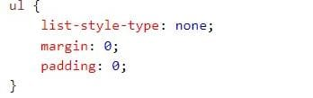

Barra de navegación = Lista de Enlaces Una barra de navegación necesita HTML estándar como base. En nuestros ejemplos vamos a construir la barra de navegación de una lista HTML estándar. Una barra de navegación es básicamente una lista de enlaces, así que usar el ul y li elementos hace perfecto sentido:
Ahora vamos a quitar las balas y los márgenes y el relleno de la lista:
El código en el ejemplo anterior es el código estándar utilizado en ambas barras de navegación vertical, y horizontal.